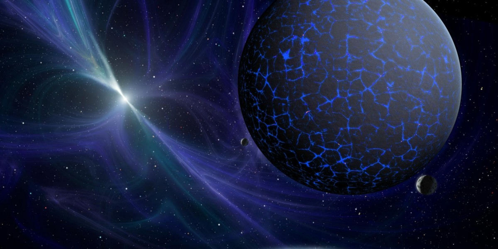

| Cette page est actuellement en cours de construction. Son auteur travaille à l'améliorer. |
Sommaire
La civilisation Antienne
- La civilisation Antienne ( aussi appelé Atienne )
est une des Trois civilisations principales connues en Amneos.
- Ils ne faut pas confondrent avec La Civilisation Antienne (ou Atienne qui est un terme qui regroupe les 3 Civilisations )
Il existe deux sous-espèces :
- - Atienne SR (Atie-Rêägndït)
- - Atienne BR (Atie-Binndriel) .
La civilisation Amneosienne
La civilisation Amneosienne et la plus avancés des 3 civilisations ce sont gràce à eux que Amneos as connu un trés fort essort technologique et donc économique (d'ailleurs les peuples extérieur ,humain ou autre les connurent en Premier et baptisaire cette planéte AMNEOS ;mais en réalité ils ne sont pas d'origines amneosienne ( la planéte ) ils viennent d'une ancienne lune : KRAYR
| Amneos | |
|---|---|
 | |
| Krayr | La lune Krayr se situe en bas a gauche |
| Elerand | La planéte Elerand est la planéte la plus proche de Binndriel malgré c'est une planète tellurique Aujourd'hui elle n'as plus aucun satellite . |
| Moorti | La seconde lune Moorti se trouve en bas a gauche de la planète ,elle as disparue en même-temps que Krayr . |
| Binndriel | Reconnaissable a sa couleur bleu elle est ici représenté avec la déviation ultra-violette que l'oeil Atiens voit ,Les humains ne voit que le soleil en bleu (ils sont par contre trés sensibles à sa luminosité ,les Amneosiens voit plus de couleur différentes mais comme les humains ils ne voient pas l'infra-rouge . |